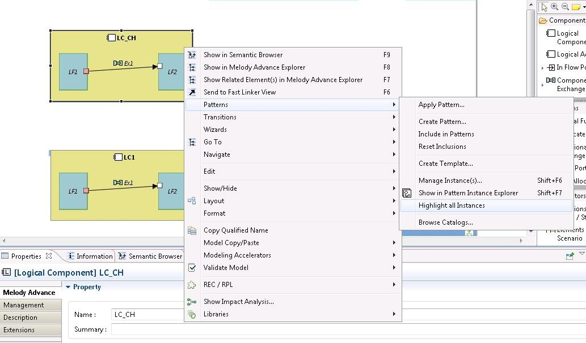

The highlight all instances feature
This feature highlights all instances that are present in a diagram. This functionality is accessible from the contextual menu of a diagram.

The highlight works exactly as described in
section “The “Highlight” button”. The “Reset” button allows recovering the style that is defined in the pattern.